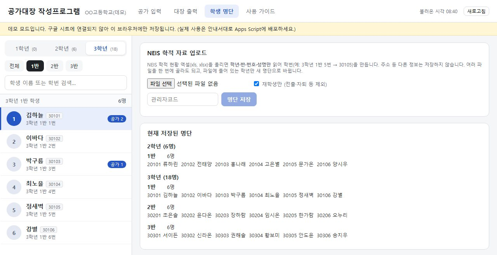
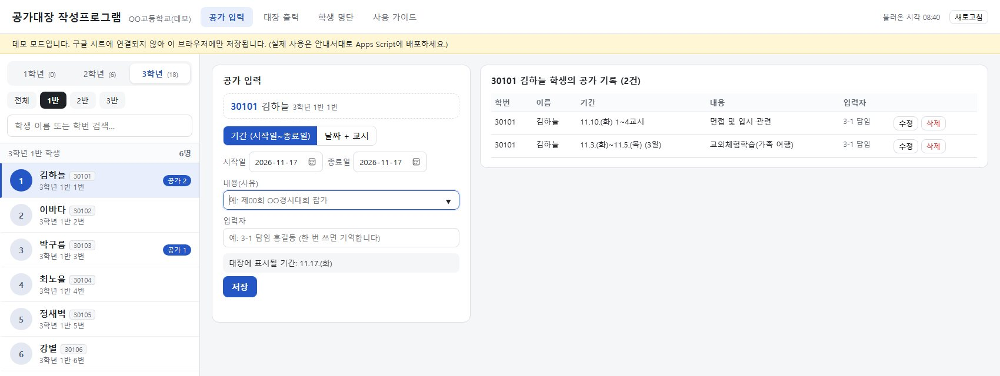
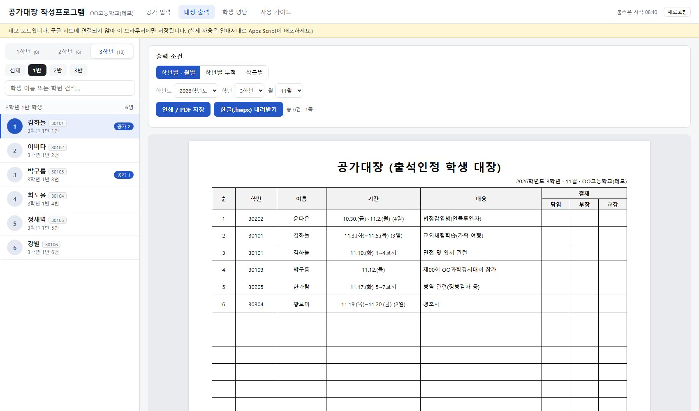

한눈에 보기
모든 기록은 우리 학교 구글 스프레드시트에 저장되고, 선생님들은 링크로 여는 입력 화면(웹앱)에서 작업합니다.
공가 입력
학생을 고르고 기간(시작일~종료일) 또는 날짜+교시와 사유만 쓰면 끝. 날짜가 겹치는 기록은 저장 전에 알려 줍니다.
대장 출력
학년별·월별 / 학년별 누적 / 학급별 대장을 A4 가로로 인쇄·PDF 저장하거나 한글(.hwpx)로 내려받습니다. 결재칸(담임·부장·교감) 포함.
NEIS 명단 연동
NEIS 학적 현황 엑셀을 그대로 올리면 학년·반·번호·이름만 읽어 학번을 만듭니다. 주소 등 다른 정보는 저장하지 않아요.
먼저 체험해 보세요
설치하기 전에 화면과 출력물을 미리 볼 수 있는 체험판입니다. 가상의 예시 학생 24명과 공가 기록 6건이 들어 있어, 바로 입력·출력을 해 볼 수 있어요.
프로그램 파일
설치 B(파일로 직접 만들기)에 쓰는 파일입니다. 두 파일의 내용을 구글 Apps Script에 붙여 넣으면 됩니다.
서버 코드 (Apps Script) · 약 20KB
입력 화면 코드 · 약 87KB
설치 안내서 (이 페이지와 같은 내용)
우리 학교에 설치하기
준비물: PC(크롬 권장), 구글 계정(학교 계정 권장), NEIS 학적 현황 엑셀. 상황에 맞는 방법 하나만 따라 하세요.
| 구글 스프레드시트 | 구글의 인터넷 엑셀. 학생 명단과 공가 기록이 여기에 저장됩니다. |
| Apps Script | 스프레드시트 안에 들어 있는 프로그램 코드. 배포할 때 한 번 들어가는 것 말고는 손댈 일이 없습니다. |
| 웹앱 · 배포 | 선생님들이 링크로 여는 입력 화면이 웹앱이고, 그 링크를 만드는 것이 배포입니다. |
| 템플릿 링크 | 학생 정보가 없는 빈 공가대장을 내 드라이브로 복사해 주는 링크(끝이 /copy). 코드까지 함께 복사되어 붙여 넣을 필요가 없습니다. |
| 접속코드 | 선생님들이 웹앱을 처음 열 때 넣는 비밀번호 (학생 정보 보호용) |
| 관리자코드 | 학생 명단을 올릴 때만 쓰는 비밀번호 (관리 선생님만) |
- 크롬에서 관리할 구글 계정으로 로그인되어 있는지 확인합니다. (계정이 여러 개면 Ctrl+Shift+N 시크릿 창에서)
- 템플릿 링크를 열고 [사본 만들기] → 이름을
2026 공가대장등으로 바꿉니다. - 아래 공통 3~6단계를 진행합니다.
- drive.google.com → [+ 새로 만들기] → [Google 스프레드시트], 이름은
2026 공가대장 - 메뉴 확장 프로그램 → Apps Script
- Code.gs를 메모장으로 열어 전체 복사 → 편집기
Code.gs칸에서 Ctrl+A → Delete → Ctrl+V - 편집기 왼쪽 "파일" 옆 + → HTML → 이름 Index(대문자 I) → Index.html 내용을 같은 방법으로 붙여 넣기
- Ctrl+S 저장 → 스프레드시트 탭에서 F5 → [📘 공가대장] 메뉴가 생기면 성공. 이어서 공통 3~6단계.
공통 단계
- 3처음 설정하기
메뉴줄 오른쪽 📘 공가대장 → ① 처음 설정하기. (안 보이면 F5 후 10초 기다리기)
권한 허락 창: "승인 필요" → [확인] → 내 계정 → "Google에서 확인하지 않은 앱"에서 왼쪽 아래 고급 → ○○(으)로 이동(안전하지 않음) → 권한 모두 선택 → 허용 "안전하지 않음"은 구글 정식 심사를 받지 않은 개인 프로그램이면 모두 나오는 문구입니다. 내가 복사한 프로그램이 내 스프레드시트를 쓰도록 허락하는 것이고, 정보가 다른 곳으로 가지 않습니다. ⚠ 허락 직후엔 창이 안 뜰 수 있으니 ① 처음 설정하기를 한 번 더 누르세요. 학교명 · 접속코드 · 관리자코드(접속코드와 다르게)를 입력하고 저장. 아래쪽에학생명단 · 공가기록 · 설정시트가 생기면 성공입니다. - 4웹앱으로 배포하기
📘 공가대장 → ② 웹앱 배포 안내 → Apps Script 편집기 열기 ↗ (코드는 건드리지 않기)
오른쪽 위 파란 배포 → 새 배포 → "유형 선택" 옆 ⚙ → 웹 앱
설명:공가대장· 다음 사용자 인증 정보로 실행: 나 · 액세스 권한: 학교 계정이면 "○○ 내 모든 사용자", 개인 gmail이면 "모든 사용자"(이때는 접속코드를 꼭 설정)
배포 → 나온 웹 앱 URL(…/exec)을 한 번 눌러 열기 → 공가대장 화면이 나오면 성공 (주소가 자동으로 기억됩니다) - 5학생 명단 올리기 — 아래 2. 학생 명단 올리기를 따라 하세요.
- 6선생님들께 링크 보내기
스프레드시트 📘 공가대장 → ③ 선생님들께 보낼 링크 → 안내 문구 복사 → 메신저에 붙여 넣기 (링크와 접속코드가 함께 들어 있어요)
학생 명단 올리기

공가 입력하기

· 기간 (시작일~종료일) 하루 이상 → 대장에 11.3.(화)~11.5.(목) (3일)
· 날짜 + 교시 몇 교시만 → 대장에 11.10.(화) 1~4교시
대장 출력 · 결재
| 학년별 · 월별 | 예) 3학년 11월 공가대장. 매달 결재받을 때 |
|---|---|
| 학년별 누적 | 학년도 전체 / 1학기 / 2학기 / 직접 정한 기간 |
| 학급별 | 한 반의 기록만. 담임이 먼저 확인할 때 |
한글(.hwpx) 내려받기 — 한글 2014 이상에서 열리고, 내용을 고칠 수 있습니다.

막혔을 때
스프레드시트에 [📘 공가대장] 메뉴가 안 보여요.
F5로 새로고침하고 10초쯤 기다리세요. 그래도 없으면 확장 프로그램 → Apps Script에 Code.gs와 Index.html이 있고 저장되었는지 확인하세요.
"이 앱은 차단되었습니다"가 떠요.
학교 구글 계정에 외부 프로그램 사용 제한이 걸린 경우입니다. 학교의 구글 계정 관리 담당(정보부)께 문의하거나 개인 구글 계정으로 설치하세요.
설치 중 권한 오류나 알 수 없는 오류가 나요.
크롬에 구글 계정이 여러 개 로그인되어 있을 때 자주 생깁니다. 시크릿 창(Ctrl+Shift+N)에서 한 계정으로만 로그인해 다시 해 보세요.
담임선생님이 링크를 열면 "액세스 권한 필요"가 떠요.
배포 → 배포 관리 → ✏️에서 액세스 권한을 "○○ 내 모든 사용자" 또는 "모든 사용자"로 바꾸고 배포하세요. 학교 도메인으로 했다면 선생님도 학교 계정으로 로그인해야 합니다.
"Script function not found: doGet"이 떠요.
Code.gs가 제대로 붙여 넣어지지 않았거나 저장 전에 배포한 경우입니다. 코드를 다시 붙여 넣고 저장한 뒤 새 버전으로 배포하세요.
메뉴 ③에 웹앱 주소가 없다고 나와요.
배포 후 나온 웹앱 주소를 한 번 열어야 기억됩니다. 배포 관리에서 웹 앱 URL을 눌러 연 뒤 다시 메뉴 ③을 누르세요.
"접속코드가 올바르지 않습니다"가 떠요.
관리 선생님께 현재 접속코드를 확인하세요. 코드는 스프레드시트 📘 공가대장 → ① 처음 설정하기에서 바꿀 수 있습니다.
백업은 어떻게 하나요?
스프레드시트 파일 → 다운로드 → Microsoft Excel로 보관하세요. 파일 → 버전 기록으로 예전 상태를 되돌릴 수도 있습니다.
학생 정보는 각 학교의 구글 스프레드시트에만 저장되며, 학교끼리 서로의 정보는 보이지 않습니다.